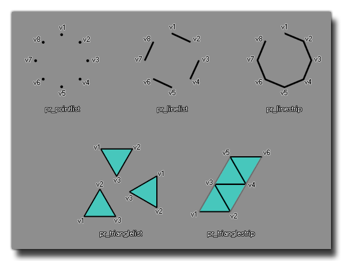

vertex_submit(buffer, primitive, texture);
| Argumento | Descripción |
|---|---|
| buffer | El buffer para usar. |
| primitive | El tipo base primitivo. |
| texture | La textura a usar (o -1 para ninguna textura). |
Devoluciones: N / A
Puede usar esta función para enviar el contenido de un búfer de vértices a la tubería de gráficos para usar con un sombreador. Proporciona el índice de búfer que se utilizará, el tipo de primitiva base que se usará (consulte las constantes a continuación) y la textura que se utilizará. El tipo de base primitiva solo se utiliza para asignar el orden en el que se dibujan y conectan los vértices que almacenó en el búfer, pero los datos reales utilizados para cada uno de los vértices serán los que definió al crear el búfer de vértices.
Para un ejemplo visual de las diferentes primitivas de base disponibles, vea la imagen a continuación: 
| Constante | Descripción |
|---|---|
| pr_pointlist | Una primitiva que consiste en una lista de puntos. |
| pr_linelist | Un primitivo compuesto por líneas individuales en una lista. |
| pr_linestrip | Un primitivo compuesto por una tira consecutiva de líneas. |
| pr_trianglelist | Un primitivo compuesto de triángulos individuales en una lista. |
| pr_triangle_strip | Un primitivo compuesto por una tira consecutiva de triángulos. |
shader_set(shader_prim);
vertex_submit(buff, pr_trianglelist,
sprite_get_texture(sprite_index));
shader_reset();
El código anterior enviará el búfer de vértices indexado en la variable "buff" para dibujar con el shader "shader_prim", usando una lista de triángulos como la primitiva base y la textura del sprite para la instancia que ejecuta el código.